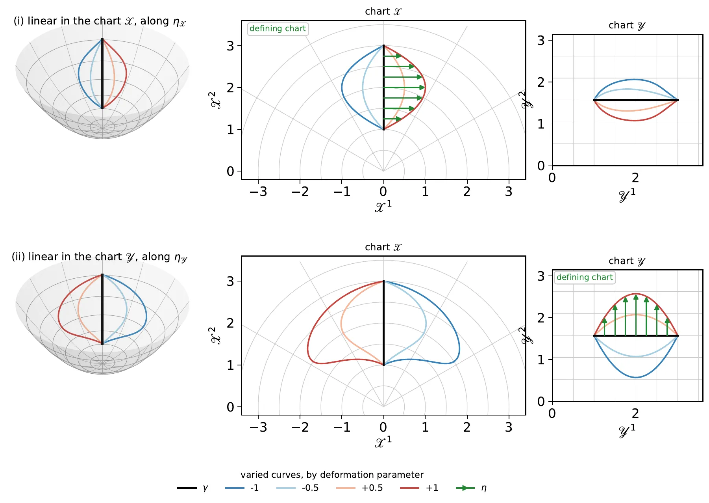
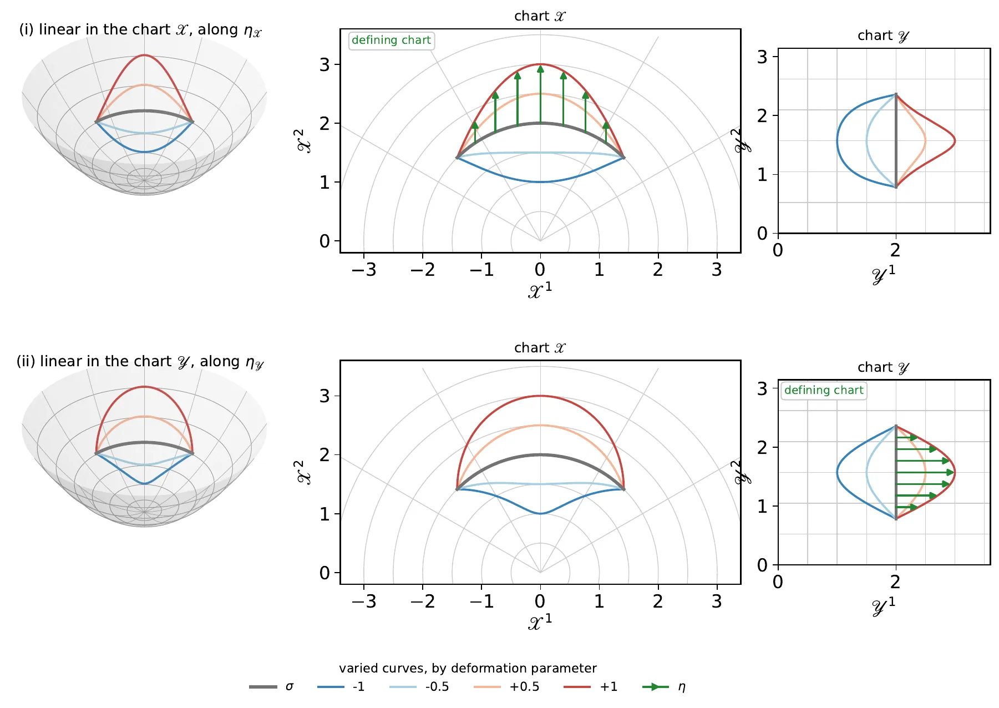
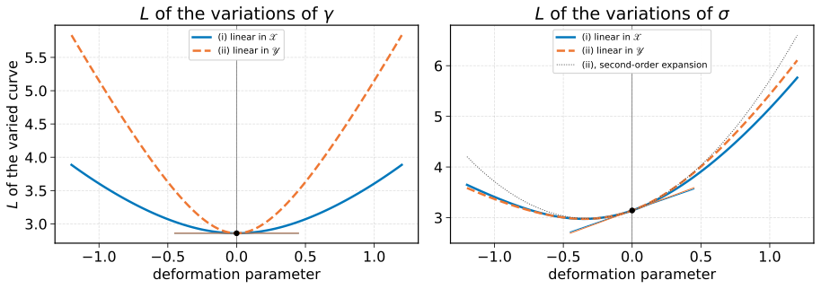

Appendix C • Examples
C.6 Example of Variations and Euler–Lagrange Equations (§7.2.1)
We follow the variational definition of geodesics of Chapter 7 on a manifold where every step can be done by hand: the Lagrangian in two charts, its Euler–Lagrange equations, how these change between charts, and the length of two families of variations of two curves, one geodesic and one not. Dots denote \(d/d\lambda\), and functions of \(p\) written along a curve are evaluated at \(\gamma(\lambda)\).
C.6.1 Setting
Manifold. Let \(\left( \mathcal{M}, \mathcal{O}_\mathcal{M}, \mathcal{A}_{C^\infty} \right)_2\) be the paraboloid \[ \mathcal{M} \coloneqq \Big\{ p = (a, b, c) \in \mathbb{R}^3 \;\Big|\; c = \frac{1}{4} \big( a^2 + b^2 \big) \Big\}, \] with the topology induced from \(\left( \mathbb{R}^3, \mathcal{O}_{\mathbb{R}^3} \right)\), and the atlas \(\mathcal{A} \coloneqq \{ (\mathcal{U}, \mathscr{X}), (\mathcal{V}, \mathscr{Y}) \}\) formed by the cartesian and the polar charts: \[ \begin{array}{c@{\;\;} | @{\;\;} c} \textbf{Chart $(\mathcal{U}, \mathscr{X})$} & \textbf{Chart $(\mathcal{V}, \mathscr{Y})$} \\[6pt] \begin{aligned} \mathcal{U} &\coloneqq \mathcal{M} \\[2pt] \mathscr{X} \colon \mathcal{U} &\longrightarrow \mathbb{R}^2 \\ (a, b, c) &\longmapsto \big( a \,,\, b \big) \end{aligned} & \begin{aligned} \mathcal{V} &\coloneqq \mathcal{M} \setminus \{ (a, 0, c) \in \mathcal{M} \mid a \leq 0 \} \\[2pt] \mathscr{Y} \colon \mathcal{V} &\longrightarrow \{ (\beta_1, \beta_2) \in \mathbb{R}^2 \mid \beta_1 > 0, \; -\pi < \beta_2 < \pi \} \\ (a, b, c) &\longmapsto \big( \sqrt{a^2 + b^2} \,,\, \operatorname{atan2}(b, a) \big) \end{aligned} \end{array} \] with inverses \(\mathscr{X}^{-1}(\alpha_1, \alpha_2) = \big( \alpha_1, \alpha_2, \frac{1}{4}(\alpha_1^2 + \alpha_2^2) \big)\) and \(\mathscr{Y}^{-1}(\beta_1, \beta_2) = \big( \beta_1 \cos \beta_2, \beta_1 \sin \beta_2, \frac{1}{4} \beta_1^2 \big)\). At a point \(p = (a, b, c) \in \mathcal{V}\) we write \(\mathscr{X}(p) = (a, b)\) and \(\mathscr{Y}(p) = (\beta_1, \beta_2)\), so that \(a = \beta_1 \cos \beta_2\), \(b = \beta_1 \sin \beta_2\) and \(c = \frac{1}{4} \beta_1^2\). The transition map \(\textrm{\runic ᛖ}_{\mathcal{V}\mathcal{U}}(\beta_1, \beta_2) = (\beta_1 \cos \beta_2, \beta_1 \sin \beta_2)\) and its inverse are smooth on \(\mathscr{Y}(\mathcal{V})\) and \(\mathscr{X}(\mathcal{V})\), and their Jacobians are \[ \left( \frac{\partial \mathscr{X}^i}{\partial \mathscr{Y}^k} \right)_p = \begin{bmatrix} \cos \beta_2 & -\beta_1 \sin \beta_2 \\ \sin \beta_2 & \beta_1 \cos \beta_2 \end{bmatrix}_{ik}, \qquad \left( \frac{\partial \mathscr{Y}^k}{\partial \mathscr{X}^i} \right)_p = \begin{bmatrix} \cos \beta_2 & \sin \beta_2 \\ -\sin \beta_2 / \beta_1 & \cos \beta_2 / \beta_1 \end{bmatrix}_{ki}. \]
Height. The scalar field \(f(p) \coloneqq c\) has chart representatives \(\big( f \circ \mathscr{X}^{-1} \big)(\alpha_1, \alpha_2) = \frac{1}{4} (\alpha_1^2 + \alpha_2^2)\) and \(\big( f \circ \mathscr{Y}^{-1} \big)(\beta_1, \beta_2) = \frac{1}{4} \beta_1^2\), whose partial derivatives give the component functions of \(df\) in each chart: \[ \mathtt{X}_1 = \frac{a}{2}, \qquad \mathtt{X}_2 = \frac{b}{2}, \qquad\qquad \mathtt{Y}_1 = \frac{\beta_1}{2}, \qquad \mathtt{Y}_2 = 0 , \] consistently with \(\mathtt{Y}_k = \big( \partial \mathscr{X}^i / \partial \mathscr{Y}^k \big) \mathtt{X}_i\).
Metric. Since \(\mathcal{U} = \mathcal{M}\), the covector fields \(dx^1\), \(dx^2\) are defined on all of \(\mathcal{M}\), and we define, for all \(\mathcal{X}_1, \mathcal{X}_2 \in \Gamma T\mathcal{M}\), \[ g(\mathcal{X}_1, \mathcal{X}_2) \coloneqq dx^1\left\lceil \mathcal{X}_1 \right\rfloor dx^1\left\lceil \mathcal{X}_2 \right\rfloor + dx^2\left\lceil \mathcal{X}_1 \right\rfloor dx^2\left\lceil \mathcal{X}_2 \right\rfloor + df\left\lceil \mathcal{X}_1 \right\rfloor df\left\lceil \mathcal{X}_2 \right\rfloor . \] With \(dx^k\left\lceil \partial x_i \right\rfloor = \delta^k_i\) and \(df\left\lceil \partial x_i \right\rfloor = \mathtt{X}_i\), its components in \((\mathcal{U}, \mathscr{X})\) are \[ (g_\mathscr{X})_{ij} = g(\partial x_i, \partial x_j) = \delta^1_i \delta^1_j + \delta^2_i \delta^2_j + \mathtt{X}_i \, \mathtt{X}_j = \begin{bmatrix} 1 + \frac{a^2}{4} & \frac{ab}{4} \\[2pt] \frac{ab}{4} & 1 + \frac{b^2}{4} \end{bmatrix}_{ij}. \] In \((\mathcal{V}, \mathscr{Y})\), the transformation law \((g_\mathscr{Y})_{kl} = \frac{\partial \mathscr{X}^i}{\partial \mathscr{Y}^k} \frac{\partial \mathscr{X}^j}{\partial \mathscr{Y}^l} (g_\mathscr{X})_{ij}\) turns the first two terms into \(\sum_i \frac{\partial \mathscr{X}^i}{\partial \mathscr{Y}^k} \frac{\partial \mathscr{X}^i}{\partial \mathscr{Y}^l}\), i.e. \(1\) for \(k = l = 1\), \(\beta_1^2\) for \(k = l = 2\) and \(0\) otherwise, and the last one into \(\mathtt{Y}_k \, \mathtt{Y}_l\): \[ (g_\mathscr{Y})_{kl} = \begin{bmatrix} W & 0 \\ 0 & \beta_1^2 \end{bmatrix}_{kl}, \qquad W \coloneqq 1 + \frac{\beta_1^2}{4} = 1 + \frac{a^2 + b^2}{4} . \] Both \(\det(g_\mathscr{X}) = W\) and \(\det(g_\mathscr{Y}) = \beta_1^2 \, W\) are positive, and \(g\) is positive definite: a Riemannian metric.
Curves. For a smooth curve \(\gamma : \mathbb{R} \to \mathcal{M}\) we name the component functions of its chart representatives and its height, \[ \gamma_\mathcal{U}(\lambda) \coloneqq (\mathscr{X} \circ \gamma)(\lambda) = \big( a(\lambda), b(\lambda) \big), \qquad \gamma_\mathcal{V}(\lambda) \coloneqq (\mathscr{Y} \circ \gamma)(\lambda) = \big( r(\lambda), \theta(\lambda) \big), \qquad c(\lambda) \coloneqq (f \circ \gamma)(\lambda), \] the second one for those \(\lambda\) with \(\gamma(\lambda) \in \mathcal{V}\). They are the coordinates \((a, b)\), \((\beta_1, \beta_2)\) and \(c\) of the point \(\gamma(\lambda)\), now as functions of \(\lambda\), so that \(a = r \cos \theta\), \(b = r \sin \theta\) and \(c = \frac{1}{4} (a^2 + b^2) = \frac{1}{4} r^2\). The components of the velocity \(v_{\gamma(\lambda)}\) are \(\dot{\gamma}_\mathcal{U} = (\dot{a}, \dot{b})\) and \(\dot{\gamma}_\mathcal{V} = (\dot{r}, \dot{\theta})\), and the rate of change of the height is \[ \dot{c} = (df)_{\gamma(\lambda)}\big( v_{\gamma(\lambda)} \big) = \mathtt{X}_i \, \dot{\gamma}^i_\mathcal{U} = \frac{1}{2} \big( a \, \dot{a} + b \, \dot{b} \big) = \mathtt{Y}_k \, \dot{\gamma}^k_\mathcal{V} = \frac{1}{2} \, r \, \dot{r} . \] Since \(g\) is Riemannian, \(\textrm{\runic ᛇ}_\gamma = +1\) wherever \(v_\gamma \neq 0\), and the speed reads, in each chart, \[ s_\gamma^2 = (g_\mathscr{X})_{ij} \, \dot{\gamma}^i_\mathcal{U} \, \dot{\gamma}^j_\mathcal{U} = \dot{a}^2 + \dot{b}^2 + \frac{1}{4} \big( a \, \dot{a} + b \, \dot{b} \big)^2 = \dot{a}^2 + \dot{b}^2 + \dot{c}^2 , \qquad s_\gamma^2 = (g_\mathscr{Y})_{kl} \, \dot{\gamma}^k_\mathcal{V} \, \dot{\gamma}^l_\mathcal{V} = W \, \dot{r}^2 + r^2 \, \dot{\theta}^2 , \] the two expressions agreeing since \(\dot{a}^2 + \dot{b}^2 = \dot{r}^2 + r^2 \dot{\theta}^2\) and \(\dot{c}^2 = \frac{1}{4} r^2 \dot{r}^2\). The first one is the euclidean speed of \(\lambda \mapsto (a, b, c) \in \mathbb{R}^3\): \(g\) is the metric induced by \(\mathbb{R}^3\).
Euler–Lagrange expressions. For a curve \(\gamma\) with \(\gamma([a,b]) \subseteq \mathcal{U}\), define, for \(m = 1, 2\), \[ (E_\mathscr{X})_m(\lambda) \coloneqq \frac{d}{d\lambda} \Big[ (\partial_{2+m} \mathcal{L}_\mathscr{X})(\gamma_\mathcal{U} ; \dot{\gamma}_\mathcal{U}) \Big] - (\partial_m \mathcal{L}_\mathscr{X})(\gamma_\mathcal{U} ; \dot{\gamma}_\mathcal{U}), \] and likewise \((E_\mathscr{Y})_m\) with \(\mathcal{L}_\mathscr{Y}\) and \((\gamma_\mathcal{V} ; \dot{\gamma}_\mathcal{V})\), so that \(\gamma\) is a geodesic if and only if \(E_\mathscr{X} = 0\) (or \(E_\mathscr{Y} = 0\)). Here \(\partial_1, \partial_2\) differentiate the position slots and \(\partial_3, \partial_4\) the velocity slots of the chart representatives \[ \mathcal{L}_\mathscr{X}\big( a, b \, ; x^1_p, x^2_p \big) = \sqrt{ (x^1_p)^2 + (x^2_p)^2 + \tfrac{1}{4} \big( a \, x^1_p + b \, x^2_p \big)^2 }, \qquad \mathcal{L}_\mathscr{Y}\big( \beta_1, \beta_2 \, ; y^1_p, y^2_p \big) = \sqrt{ W \, (y^1_p)^2 + \beta_1^2 \, (y^2_p)^2 } . \] Every partial derivative of \(\mathcal{L} = \sqrt{F}\) carries a factor \(1 / \mathcal{L}\), which equals \(1 / s_\gamma\) on the curve. Since \(s_\gamma > 0\), we clear it by computing \(s_\gamma \, E\), which vanishes if and only if \(E\) does.
Cartesian chart.
Partial derivatives. With \(u \coloneqq a \, x^1_p + b \, x^2_p\) and \(\partial \sqrt{F} = \partial F / (2 \sqrt{F})\), \[ \partial_1 \mathcal{L}_\mathscr{X} = \frac{u \, x^1_p}{4 \mathcal{L}_\mathscr{X}}, \qquad \partial_2 \mathcal{L}_\mathscr{X} = \frac{u \, x^2_p}{4 \mathcal{L}_\mathscr{X}}, \qquad \partial_3 \mathcal{L}_\mathscr{X} = \frac{x^1_p + \frac{1}{4} u \, a}{\mathcal{L}_\mathscr{X}}, \qquad \partial_4 \mathcal{L}_\mathscr{X} = \frac{x^2_p + \frac{1}{4} u \, b}{\mathcal{L}_\mathscr{X}} . \]
On the curve. With \((a, b \, ; x^1_p, x^2_p) = (a, b \, ; \dot{a}, \dot{b})\): \(u = a \dot{a} + b \dot{b} = 2 \dot{c}\), \(\frac{1}{4} u \, a = \dot{c} \, \mathtt{X}_1\), \(\frac{1}{4} u \, b = \dot{c} \, \mathtt{X}_2\) and \(\mathcal{L}_\mathscr{X} = s_\gamma\), so \[ \partial_1 \mathcal{L}_\mathscr{X} = \frac{\dot{c} \, \dot{a}}{2 s_\gamma}, \qquad \partial_2 \mathcal{L}_\mathscr{X} = \frac{\dot{c} \, \dot{b}}{2 s_\gamma}, \qquad \partial_3 \mathcal{L}_\mathscr{X} = \frac{\dot{a} + \dot{c} \, \mathtt{X}_1}{s_\gamma}, \qquad \partial_4 \mathcal{L}_\mathscr{X} = \frac{\dot{b} + \dot{c} \, \mathtt{X}_2}{s_\gamma} . \]
\(\lambda\)-derivative. By the quotient rule and \(\frac{d}{d\lambda} (\mathtt{X}_1 \circ \gamma) = \frac{1}{2} \dot{a}\), \[ \frac{d}{d\lambda} \big[ \partial_3 \mathcal{L}_\mathscr{X} \big] = \frac{\ddot{a} + \ddot{c} \, \mathtt{X}_1 + \frac{1}{2} \dot{c} \, \dot{a}}{s_\gamma} - \frac{s_\gamma'}{s_\gamma^2} \big( \dot{a} + \dot{c} \, \mathtt{X}_1 \big). \] Subtracting \(\partial_1 \mathcal{L}_\mathscr{X}\) cancels the term \(\frac{1}{2} \dot{c} \, \dot{a} / s_\gamma\), and likewise for \(m = 2\): \[ \boxed{ s_\gamma (E_\mathscr{X})_1 = \ddot{a} + \mathtt{X}_1 \, \ddot{c} - \frac{s_\gamma'}{s_\gamma} \big( \dot{a} + \dot{c} \, \mathtt{X}_1 \big), \qquad s_\gamma (E_\mathscr{X})_2 = \ddot{b} + \mathtt{X}_2 \, \ddot{c} - \frac{s_\gamma'}{s_\gamma} \big( \dot{b} + \dot{c} \, \mathtt{X}_2 \big) . } \]
Polar chart.
Partial derivatives on the curve. With \(\partial_1 W = \frac{1}{2} \beta_1\) and \((\beta_1, \beta_2 \, ; y^1_p, y^2_p) = (r, \theta \, ; \dot{r}, \dot{\theta})\), \[ \partial_1 \mathcal{L}_\mathscr{Y} = \frac{\frac{1}{4} r \dot{r}^2 + r \dot{\theta}^2}{s_\gamma}, \qquad \partial_2 \mathcal{L}_\mathscr{Y} = 0, \qquad \partial_3 \mathcal{L}_\mathscr{Y} = \frac{W \dot{r}}{s_\gamma}, \qquad \partial_4 \mathcal{L}_\mathscr{Y} = \frac{r^2 \dot{\theta}}{s_\gamma} . \]
\(\lambda\)-derivative. By the quotient rule and \(\frac{d}{d\lambda} (W \circ \gamma) = \frac{1}{2} r \dot{r}\), \[ \boxed{ s_\gamma (E_\mathscr{Y})_1 = W \ddot{r} + \tfrac{1}{4} r \dot{r}^2 - r \dot{\theta}^2 - \frac{s_\gamma'}{s_\gamma} \, W \dot{r}, \qquad s_\gamma (E_\mathscr{Y})_2 = r^2 \ddot{\theta} + 2 r \dot{r} \dot{\theta} - \frac{s_\gamma'}{s_\gamma} \, r^2 \dot{\theta} . } \] Since \(\partial_2 \mathcal{L}_\mathscr{Y} = 0\) (the angle is cyclic), \((E_\mathscr{Y})_2 = \frac{d}{d\lambda} \big[ r^2 \dot{\theta} / s_\gamma \big]\), so \(r^2 \dot{\theta} / s_\gamma\) is constant along every geodesic.
For a constant-speed parametrization, \(s_\gamma' = 0\) and the last term of every boxed expression drops.
Contraction with the velocity. For every curve, \((E_\mathscr{X})_m \, \dot{\gamma}^m_\mathcal{U} = 0\). Using \(\mathtt{X}_1 \dot{a} + \mathtt{X}_2 \dot{b} = \dot{c}\) and \(s_\gamma s_\gamma' = \dot{a} \ddot{a} + \dot{b} \ddot{b} + \dot{c} \ddot{c}\), \[ s_\gamma \, (E_\mathscr{X})_m \, \dot{\gamma}^m_\mathcal{U} = \big( \dot{a} \ddot{a} + \dot{b} \ddot{b} + \dot{c} \ddot{c} \big) - \frac{s_\gamma'}{s_\gamma} \big( \dot{a}^2 + \dot{b}^2 + \dot{c}^2 \big) = s_\gamma s_\gamma' - \frac{s_\gamma'}{s_\gamma} \, s_\gamma^2 = 0 . \] Only the component of \(E_\mathscr{X}\) transverse to the curve carries information: a variation with \(\textrm{\runic ᛉ} \propto \dot{\gamma}_\mathcal{U}\) moves the curve along itself, which to first order is a reparametrization and leaves the length unchanged.
C.6.2 Change of chart
Claim. Along any curve in \(\mathcal{U} \cap \mathcal{V}\), \[ \boxed{ (E_\mathscr{Y})_k = \frac{\partial \mathscr{X}^i}{\partial \mathscr{Y}^k} \, (E_\mathscr{X})_i , } \] the transformation law of the components of a covector. Hence \(E_\mathscr{X} = 0 \iff E_\mathscr{Y} = 0\): being a geodesic does not depend on the chart.
Proof (any \(d\), any two charts). Let \(\textrm{\runic ᛖ}_{\mathcal{V}\mathcal{U}} \coloneqq \mathscr{X} \circ \mathscr{Y}^{-1}\) and \(J^i_k \coloneqq \partial_k \textrm{\runic ᛖ}_{\mathcal{V}\mathcal{U}}^i\).
Since \(x^i = J^i_l \, y^l\) are the components of the same vector, \(\mathcal{L}_\mathscr{Y}(\beta \, ; y) = \mathcal{L}_\mathscr{X}\big( \textrm{\runic ᛖ}_{\mathcal{V}\mathcal{U}}(\beta) \, ; J(\beta) \, y \big)\).
Chain rule: \(\partial_{d+k} \mathcal{L}_\mathscr{Y} = J^i_k \, \partial_{d+i} \mathcal{L}_\mathscr{X}\) and \(\partial_k \mathcal{L}_\mathscr{Y} = J^i_k \, \partial_i \mathcal{L}_\mathscr{X} + (\partial_k J^i_l) \, y^l \, \partial_{d+i} \mathcal{L}_\mathscr{X}\).
Along the curve, \(\frac{d}{d\lambda} J^i_k = (\partial_l J^i_k) \, \dot{\gamma}^l_\mathcal{V} = (\partial_k J^i_l) \, \dot{\gamma}^l_\mathcal{V}\) by Schwarz’s theorem, so \[ \begin{aligned} (E_\mathscr{Y})_k &= J^i_k \, \frac{d}{d\lambda} \big[ \partial_{d+i} \mathcal{L}_\mathscr{X} \big] + (\partial_k J^i_l) \, \dot{\gamma}^l_\mathcal{V} \, \partial_{d+i} \mathcal{L}_\mathscr{X} - J^i_k \, \partial_i \mathcal{L}_\mathscr{X} - (\partial_k J^i_l) \, \dot{\gamma}^l_\mathcal{V} \, \partial_{d+i} \mathcal{L}_\mathscr{X} \\ &= J^i_k \, (E_\mathscr{X})_i . \qquad \square \end{aligned} \]
C.6.3 Two curves
Consider the meridian \(\gamma\) from \(A \coloneqq \mathscr{X}^{-1}(0, 1)\) to \(B \coloneqq \mathscr{X}^{-1}(0, 3)\), and the arc \(\sigma\) of the parallel \(\beta_1 = 2\) from \(P \coloneqq \mathscr{X}^{-1}(\sqrt{2}, \sqrt{2})\) to \(Q \coloneqq \mathscr{X}^{-1}(-\sqrt{2}, \sqrt{2})\) (Figure C.9): \[ \begin{aligned} \gamma_\mathcal{U}(\lambda) &= (0, \lambda), & \gamma_\mathcal{V}(\lambda) &= \big( \lambda, \tfrac{\pi}{2} \big), & \lambda &\in [1, 3], \\ \sigma_\mathcal{U}(\lambda) &= (2 \cos \lambda, 2 \sin \lambda), & \sigma_\mathcal{V}(\lambda) &= (2, \lambda), & \lambda &\in \big[ \tfrac{\pi}{4}, \tfrac{3\pi}{4} \big]. \end{aligned} \]

The meridian is a geodesic. Its parametrization does not have constant speed, so the terms with \(s_\gamma'\) matter.
Ingredients. \(\dot{a} = \ddot{a} = 0\), \(\dot{b} = 1\), \(\ddot{b} = 0\), \(c = \frac{\lambda^2}{4}\), \(\dot{c} = \frac{\lambda}{2}\), \(\ddot{c} = \frac{1}{2}\), \(\mathtt{X}_1 = 0\), \(\mathtt{X}_2 = \frac{\lambda}{2}\), \(W = 1 + \frac{\lambda^2}{4}\), and \(s_\gamma = \sqrt{1 + \dot{c}^2} = \sqrt{W}\), so \(\frac{s_\gamma'}{s_\gamma} = \frac{\dot{W}}{2W} = \frac{\lambda}{4W}\).
Cartesian chart. \(s_\gamma (E_\mathscr{X})_1 = 0\), and \[ s_\gamma (E_\mathscr{X})_2 = 0 + \frac{\lambda}{2} \cdot \frac{1}{2} - \frac{\lambda}{4W} \Big( 1 + \frac{\lambda}{2} \cdot \frac{\lambda}{2} \Big) = \frac{\lambda}{4} - \frac{\lambda}{4W} \, W = 0 . \]
Polar chart. \(r = \lambda\), \(\dot{r} = 1\), \(\ddot{r} = 0\), \(\dot{\theta} = \ddot{\theta} = 0\): \(s_\gamma (E_\mathscr{Y})_1 = 0 + \frac{\lambda}{4} - 0 - \frac{\lambda}{4W} \, W = 0\) and \(s_\gamma (E_\mathscr{Y})_2 = 0\).
Length. With \(F(\lambda) \coloneqq \frac{\lambda}{2} \sqrt{W} + \operatorname{arsinh} \frac{\lambda}{2}\), which satisfies \(F' = \sqrt{W}\), \[ L_{[1,3]}[\gamma] = \int_1^3 \sqrt{1 + \tfrac{\lambda^2}{4}} \; d\lambda = F(3) - F(1) = \frac{3 \sqrt{13} - \sqrt{5}}{4} + \operatorname{arsinh} \tfrac{3}{2} - \operatorname{arsinh} \tfrac{1}{2} . \]
The parallel is not a geodesic.
Ingredients. \(c = 1\), so \(\dot{c} = \ddot{c} = 0\); \(\dot{\sigma}_\mathcal{U} = (-2 \sin \lambda, 2 \cos \lambda)\), \(\ddot{\sigma}_\mathcal{U} = -\sigma_\mathcal{U}\); \(s_\sigma = 2\) and \(s_\sigma' = 0\).
Cartesian chart. Only the accelerations survive: \[ (E_\mathscr{X})_1 = \tfrac{1}{2} (-2 \cos \lambda) = -\cos \lambda, \qquad (E_\mathscr{X})_2 = \tfrac{1}{2} (-2 \sin \lambda) = -\sin \lambda . \]
Polar chart. \(r = 2\), \(\dot{r} = \ddot{r} = 0\), \(\dot{\theta} = 1\), \(\ddot{\theta} = 0\): \[ (E_\mathscr{Y})_1 = \tfrac{1}{2} (-2) = -1, \qquad (E_\mathscr{Y})_2 = 0 . \]
Change of chart. With \(\beta_2 = \lambda\): \(\cos \lambda \, (-\cos \lambda) + \sin \lambda \, (-\sin \lambda) = -1\) and \(-2 \sin \lambda \, (-\cos \lambda) + 2 \cos \lambda \, (-\sin \lambda) = 0\), as the Claim of Subsection C.6.2 requires. ✓ \(E\) has no component along \(\dot{\sigma}\), which points in the direction of \(\partial y_2\).
Length. \(L_{[\pi/4, 3\pi/4]}[\sigma] = \int_{\pi/4}^{3\pi/4} 2 \, d\lambda = \pi\).
C.6.4 Variations of the meridian
With \(\varphi(\lambda) \coloneqq (\lambda - 1)(3 - \lambda)\), which vanishes at \(\lambda = 1, 3\), and \(\varphi' = 4 - 2\lambda\), consider (Figure C.10) \[ \text{(i)} \quad \mathscr{X} \circ \gamma_{\textrm{\runic ᛊ}} = \big( \textrm{\runic ᛊ} \, \varphi, \, \lambda \big), \quad \textrm{\runic ᛉ}_\mathscr{X} = (\varphi, 0); \qquad \text{(ii)} \quad \mathscr{Y} \circ \gamma_{\textrm{\runic ᛊ}} = \big( \lambda, \, \tfrac{\pi}{2} + \textrm{\runic ᛊ} \, \varphi \big), \quad \textrm{\runic ᛉ}_\mathscr{Y} = (0, \varphi). \] Family (i) pushes \(\gamma\) sideways in the chart \(\mathscr{X}\), family (ii) rotates it in the chart \(\mathscr{Y}\) (admissible for \(|\textrm{\runic ᛊ}| < \frac{\pi}{2}\), since \(\varphi \leq 1\)). Neither is a straight shift in the other chart: e.g. for (ii), \(\mathscr{X} \circ \gamma_{\textrm{\runic ᛊ}} = \lambda \big( -\sin(\textrm{\runic ᛊ} \varphi), \cos(\textrm{\runic ᛊ} \varphi) \big)\) is not affine in \(\textrm{\runic ᛊ}\).

First variation. By step 5 of Appendix B.14, in the chart defining each family, \[ \text{(i)} \;\; \frac{d}{d\textrm{\runic ᛊ}} L_{[1,3]}[\gamma_{\textrm{\runic ᛊ}}] \Big|_{\textrm{\runic ᛊ}=0} = -\int_1^3 (E_\mathscr{X})_1 \, \varphi \, d\lambda = 0, \qquad \text{(ii)} \;\; \frac{d}{d\textrm{\runic ᛊ}} L_{[1,3]}[\gamma_{\textrm{\runic ᛊ}}] \Big|_{\textrm{\runic ᛊ}=0} = -\int_1^3 (E_\mathscr{Y})_2 \, \varphi \, d\lambda = 0 . \]
Family (ii), exactly. The varied curve has \(r = \lambda\), \(\dot{r} = 1\), \(\dot{\theta} = \textrm{\runic ᛊ} \, \varphi'\), so \[ L_{[1,3]}[\gamma_{\textrm{\runic ᛊ}}] = \int_1^3 \sqrt{W + \textrm{\runic ᛊ}^2 \lambda^2 \varphi'^2} \; d\lambda \;\geq\; \int_1^3 \sqrt{W} \, d\lambda = L_{[1,3]}[\gamma] , \] with equality only for \(\textrm{\runic ᛊ} = 0\): rotating any part of the meridian makes it longer.
Family (i), to second order. The varied curve has \((a, b; \dot{a}, \dot{b}) = (\textrm{\runic ᛊ} \varphi, \lambda; \textrm{\runic ᛊ} \varphi', 1)\), so \(u = \lambda + \textrm{\runic ᛊ}^2 \varphi \varphi'\) and \[ \mathcal{L}_\mathscr{X}^2 = \textrm{\runic ᛊ}^2 \varphi'^2 + 1 + \tfrac{1}{4} \big( \lambda + \textrm{\runic ᛊ}^2 \varphi \varphi' \big)^2 = W + \textrm{\runic ᛊ}^2 \big( \varphi'^2 + \tfrac{1}{2} \lambda \varphi \varphi' \big) + O(\textrm{\runic ᛊ}^4) . \] With \(\sqrt{W + \delta} = \sqrt{W} + \delta / (2 \sqrt{W}) + O(\delta^2)\), \(L_{[1,3]}[\gamma_{\textrm{\runic ᛊ}}] = L_{[1,3]}[\gamma] + \frac{1}{2} \textrm{\runic ᛊ}^2 \, I + O(\textrm{\runic ᛊ}^4)\), where, integrating by parts with \(\frac{1}{2} \lambda \varphi \varphi' = \frac{1}{4} \lambda (\varphi^2)'\), \(\varphi(1) = \varphi(3) = 0\) and \((\lambda W^{-1/2})' = W^{-3/2}\), \[ I = \int_1^3 \frac{\varphi'^2 + \frac{1}{2} \lambda \varphi \varphi'}{\sqrt{W}} \, d\lambda = \int_1^3 \Big( \frac{\varphi'^2}{\sqrt{W}} - \frac{\varphi^2}{4 W^{3/2}} \Big) d\lambda . \]
Sign of \(I\). On \([1,3]\), \(\frac{5}{4} \leq W \leq \frac{13}{4}\), and Wirtinger’s inequality for functions vanishing at both ends of an interval of length \(2\) gives \(\int_1^3 \varphi'^2 \, d\lambda \geq \frac{\pi^2}{4} \int_1^3 \varphi^2 \, d\lambda\). Therefore \[ I \;\geq\; \frac{2}{\sqrt{13}} \cdot \frac{\pi^2}{4} \int_1^3 \varphi^2 \, d\lambda - \frac{1}{4} \Big( \frac{4}{5} \Big)^{3/2} \int_1^3 \varphi^2 \, d\lambda = \Big( \frac{\pi^2}{2 \sqrt{13}} - \frac{2}{5 \sqrt{5}} \Big) \int_1^3 \varphi^2 \, d\lambda > 0 , \] since \(\frac{\pi^2}{2 \sqrt{13}} > 1 > \frac{2}{5 \sqrt{5}}\). The argument only uses \(\varphi(1) = \varphi(3) = 0\), so \(\textrm{\runic ᛊ} = 0\) is a strict local minimum of the length for every sideways push \(\textrm{\runic ᛉ}_\mathscr{X} = (\varphi, 0)\), not only for this \(\varphi\) (Figure C.12, left).
C.6.5 Variations of the parallel
With \(\psi(\lambda) \coloneqq -\cos 2\lambda\), which vanishes at \(\lambda = \frac{\pi}{4}, \frac{3\pi}{4}\) and is positive in between, and \(\psi' = 2 \sin 2\lambda\), consider (Figure C.11) \[ \text{(i)} \quad \mathscr{X} \circ \sigma_{\textrm{\runic ᛊ}} = \sigma_\mathcal{U} + \textrm{\runic ᛊ} \, \textrm{\runic ᛉ}_\mathscr{X}, \quad \textrm{\runic ᛉ}_\mathscr{X} = (0, \psi); \qquad \text{(ii)} \quad \mathscr{Y} \circ \sigma_{\textrm{\runic ᛊ}} = \big( 2 + \textrm{\runic ᛊ} \, \psi, \, \lambda \big), \quad \textrm{\runic ᛉ}_\mathscr{Y} = (\psi, 0), \] (ii) being admissible for \(|\textrm{\runic ᛊ}| < 2\). Family (i) pushes \(\sigma\) in the direction of \(\partial x_2\), family (ii) radially, up (\(\textrm{\runic ᛊ} > 0\)) or down (\(\textrm{\runic ᛊ} < 0\)) the wall of the bowl. We write \(L \coloneqq L_{[\pi/4, 3\pi/4]}\).

First variation, family (i). With \((E_\mathscr{X})_2 = -\sin \lambda\), and substituting \(w = \cos \lambda\), \(\cos 2\lambda = 2w^2 - 1\), \[ \frac{d}{d\textrm{\runic ᛊ}} L[\sigma_{\textrm{\runic ᛊ}}] \Big|_{\textrm{\runic ᛊ}=0} = \int_{\pi/4}^{3\pi/4} \sin \lambda \, (-\cos 2\lambda) \, d\lambda = \int_{-\sqrt{2}/2}^{\sqrt{2}/2} \big( 1 - 2w^2 \big) \, dw = 2 \Big( \frac{\sqrt{2}}{2} - \frac{2}{3} \cdot \frac{\sqrt{2}}{4} \Big) = \frac{2\sqrt{2}}{3} . \]
First variation, family (ii). With \((E_\mathscr{Y})_1 = -1\), \[ \frac{d}{d\textrm{\runic ᛊ}} L[\sigma_{\textrm{\runic ᛊ}}] \Big|_{\textrm{\runic ᛊ}=0} = \int_{\pi/4}^{3\pi/4} \psi \, d\lambda = \Big[ -\tfrac{1}{2} \sin 2\lambda \Big]_{\pi/4}^{3\pi/4} = 1 . \] The same in the chart \(\mathscr{X}\): there family (ii) is \(\sigma_\mathcal{U} + \textrm{\runic ᛊ} \, \tilde{\textrm{\runic ᛉ}}\) with \(\tilde{\textrm{\runic ᛉ}}^i = \frac{\partial \mathscr{X}^i}{\partial \mathscr{Y}^k} \textrm{\runic ᛉ}_\mathscr{Y}^k = \psi \, (\cos \lambda, \sin \lambda)^i\), and \(-\int (E_\mathscr{X})_i \, \tilde{\textrm{\runic ᛉ}}^i \, d\lambda = \int \psi \, (\cos^2 \lambda + \sin^2 \lambda) \, d\lambda = 1\). ✓
Interpretation. Both derivatives are positive: pushing \(\sigma\) up the bowl lengthens it, pushing it down shortens it, so \(\sigma\) is not the shortest curve from \(P\) to \(Q\).
Family (ii), to second order. Here \(r = 2 + \textrm{\runic ᛊ} \psi\), \(\dot{r} = \textrm{\runic ᛊ} \psi'\), \(\dot{\theta} = 1\), and \(W = 2 + O(\textrm{\runic ᛊ})\), so \[ \mathcal{L}_\mathscr{Y}^2 = (2 + \textrm{\runic ᛊ} \psi)^2 + W \textrm{\runic ᛊ}^2 \psi'^2 = 4 + \delta, \qquad \delta = 4 \textrm{\runic ᛊ} \psi + \textrm{\runic ᛊ}^2 \big( \psi^2 + 2 \psi'^2 \big) + O(\textrm{\runic ᛊ}^3) . \] From \(\sqrt{4 + \delta} = 2 + \frac{\delta}{4} - \frac{\delta^2}{64} + O(\delta^3)\), with \(\frac{\delta^2}{64} = \frac{1}{4} \textrm{\runic ᛊ}^2 \psi^2 + O(\textrm{\runic ᛊ}^3)\), the \(\psi^2\) terms cancel: \[ \mathcal{L}_\mathscr{Y} = 2 + \textrm{\runic ᛊ} \, \psi + \tfrac{1}{2} \textrm{\runic ᛊ}^2 \psi'^2 + O(\textrm{\runic ᛊ}^3), \qquad L[\sigma_{\textrm{\runic ᛊ}}] = \pi + \textrm{\runic ᛊ} + \frac{\pi}{2} \, \textrm{\runic ᛊ}^2 + O(\textrm{\runic ᛊ}^3), \] using \(\int \psi \, d\lambda = 1\) and \(\int \psi'^2 \, d\lambda = \int 4 \sin^2 2\lambda \, d\lambda = \pi\). Moving down the bowl shortens the arc (first order), at the cost of the extra radial motion \(\psi'\) (second order); the two balance near \(\textrm{\runic ᛊ} = -\frac{1}{\pi}\), where the length is about \(\pi - \frac{1}{2\pi}\) (Figure C.12, right).
